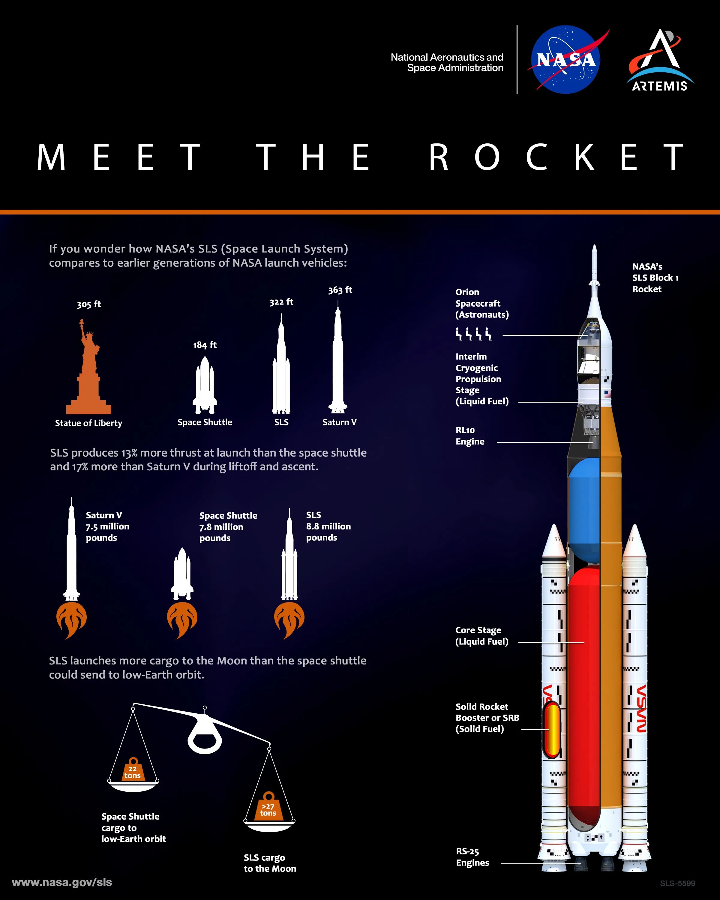
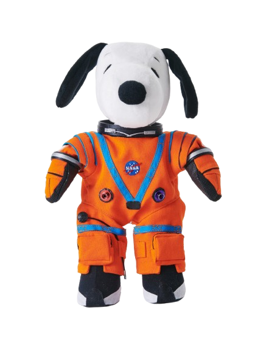
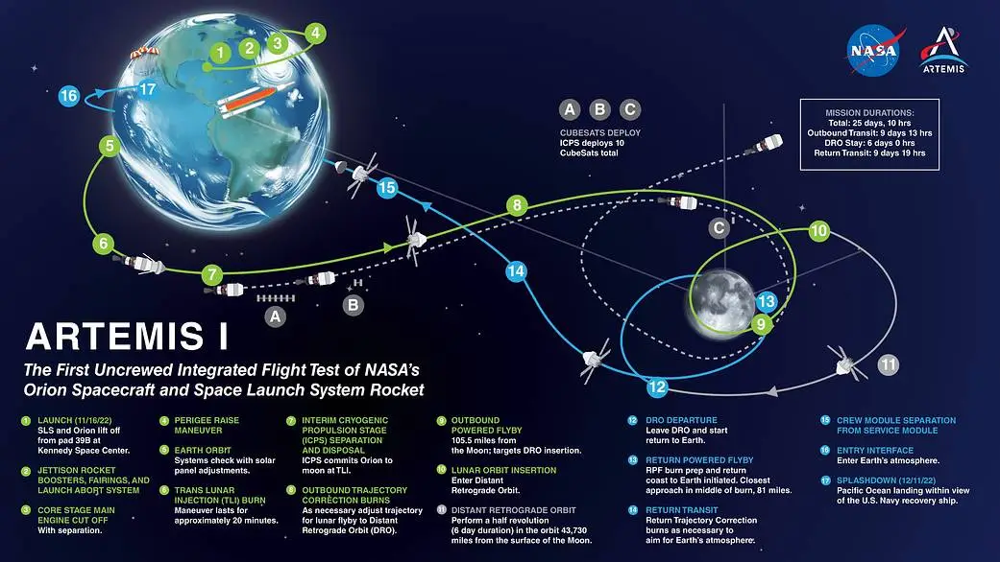
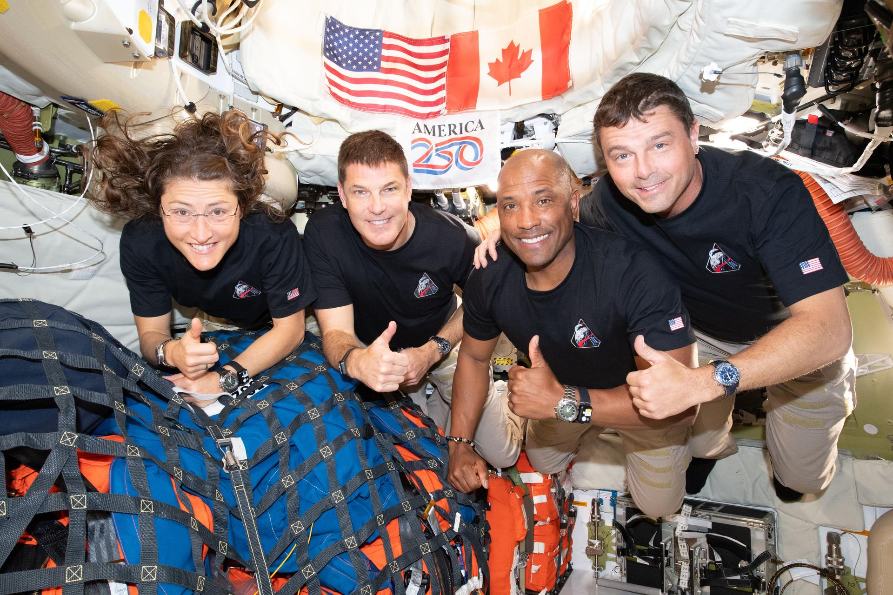
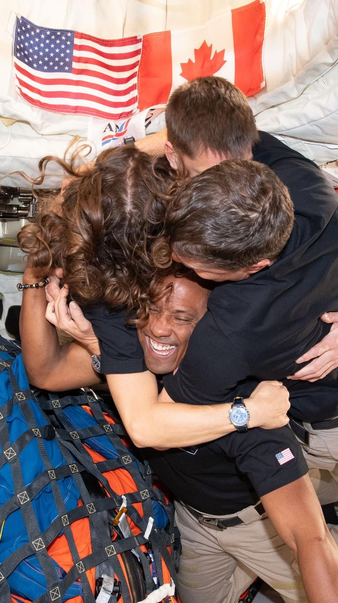
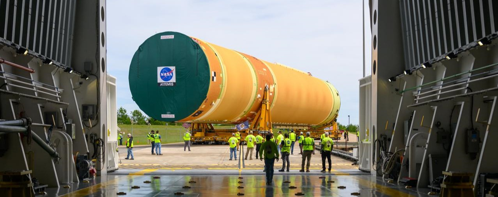

Artemis Mission
✶ Artemis I
✶ Artemis II
✶ Artemis III
Artemis - what do you need to know?
The
main goal of this mission is to return humans to the Moon after 5 decades, build a
moon base and therefore, explore more of the moon.
A brief summary of all Artemis missions:
✶ Artemis I - uncrewed, testing mission (completed)
✶ Artemis II - inspiring and memorable crew, orbiting the Moon and seeing its "invisible" side (completed)
✶ Artemis III - testing mission, but this time with crew (planned for 2027)
✶ Artemis IV - moon landing mission! (planned for early 2028)
✶ Artemis V - another moon landing mission, this time, with lots of experiments and preparations for the construction of a moon base! (planned for late 2028)
How is the spacecraft, that's flying to the moon built?
There are 2 main segments: the SLS Rocket (Space Launch System) and Orion, the Capsule. Below, you can see the
whole spacecraft, but we are going to focus on these two main elements.



you can change between the photos by clicking on the circles!
Credits: NASA/MSFC
SLS - Space Launch System
It's the most powerful and capable rocket NASA has ever built! It's designed to send Orion, astronauts and other supplies to the Moon
in a single mission - SLS is the only launch vehicle that can make it possible!
In the future, this rocket will be able to send increasingly heavy payloads to the Moon with even greater power!
Orion
Orion is the racket capsule, a place where the crew lives. It is the only capsule that is capable of taking astronauts
that far. Every other one fly only in Earth orbit. The Artemis II crew named the capsule "Integrity", what do you
think - how will future missions name Orion??
Learn more here:
1. SLS
2. Orion
Did you know?
The name "Artemis" comes from Artemis, the goddess of the moon, who's a twin sister of Apollo (the god of the sun and light).
Artemis 1 mission
Artemis 1 mission was an uncrewed, lunar orbital flight test.
It tested the operation of the systems, checked any potential errors
and looked for things that could go wrong.

There were three astronaut-like mannequins in the Orion spacecraft. Besides them,
Orion carried a Shaun the Sheep toy, representing the ESA's contribution to the mission
and a plushie of Snoopy! The Snoopy was a zero gravity indicator: because of no crew, he
was a visual signal, when the spacecraft has reached the weightlessness of microgravity
This mission lasted 25 days (from November 16 to December 11 of 2022).
Artemis I orbited the Moon, spent a few days in orbit, and then returned to Earth.
You can see it's route below:

if you have struggle with reading, move you cursor on the map to magnify!
Artemis 2 mission
Artemis 2 did not land on the Moon; it was a flyby, testing mission but this time with crew. During this mission, humans traveled
further from Earth than ever before in history, reaching the far side of the Moon which is invisible from Earth.
The previous record was roughly 400 171 km (248 655 miles), set by the Apollo 13 mission
(which - as a fun fact - reached that distance due to a breakdown).
You can see it's route below:

if you have struggle with reading, move you cursor on the map to magnify!
Artemis 2 only circled the Moon without entering orbit. Thanks to this, it returned to Earth automatically along its
flight trajectory, without any additional maneuver.
The Artemis II crew was really inspiring to the young generation. They made kids dream big again and
believe in themselfes! The Artemis II team named Orion "Integrity" - it's their's mission capsule nick!



The Artemis II crew. Credits: NASA
You can learn more about them here
or check theirs instagrams!
1. Christina Koch - @astro_christina
2. Jeremy Hansen - @astrojeremy
3. Victor Glover - @astrovicglover
4. Reid Wiseman - @astro_reid
Artemis 3 mission
Initially, this mission was intended to be a moon landing mission. Instead, Artemis 3 will fly to low Earth orbit,
where it will conduct tests including rendezvous and docking capabilities.
"While this is a mission to Earth orbit, it is an important stepping stone to successfully landing on the Moon with Artemis IV. Artemis III is one of the most highly complex missions NASA has undertaken"
- Jeremy Parsons

NASA moving the core stage, or the largest section, of the SLS (Space Launch System)
rocket that will launch the crewed Artemis III mission in 2027. Source: NASA, Credits: Eric Bordelon
Learn more about the Artemis III mission here
What about the Artemis IV and V?
The Artemis IV mission is planned for early 2028.
"Artemis IV will be one of the most complex undertakings of engineering and human ingenuity in the history of deep space exploration,
exploring the lunar South Pole region. The astronauts' observations, samples, and data collected will expand our understanding
of our solar system and home planet, while inspiring the Artemis Generation.
Artemis IV astronauts will travel to lunar orbit, where two crew members will descend to the surface and spend approximately a week near the South Pole of
the Moon conducting new science before returning to lunar orbit to join their crew for the journey back to Earth."
Source: NASA
The Artemis IV crew will reach the lunar orbit aboard the Orion Spacecraft and then it will dock with a lander
in preparation for their journey to the moon surface! Orion is an extraordinary feat of humanity - it is the only
spacecraft capable of bringing the crew back to Earth at the speeds associated with a return from the vicinity of the Moon.
Orion really is one of the best spaecrafts ever!!
Learn more about Artemis IV
here
We don't know much about Artemis V yet. It's planned for the end of 2028 so in 2028 we will
have 2 moon landing missions!
Did you know?
After Artemis mission NASA is planning roughly annual Moon landings.